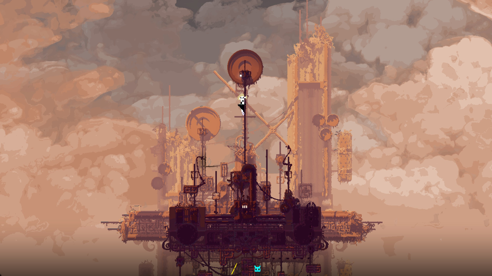
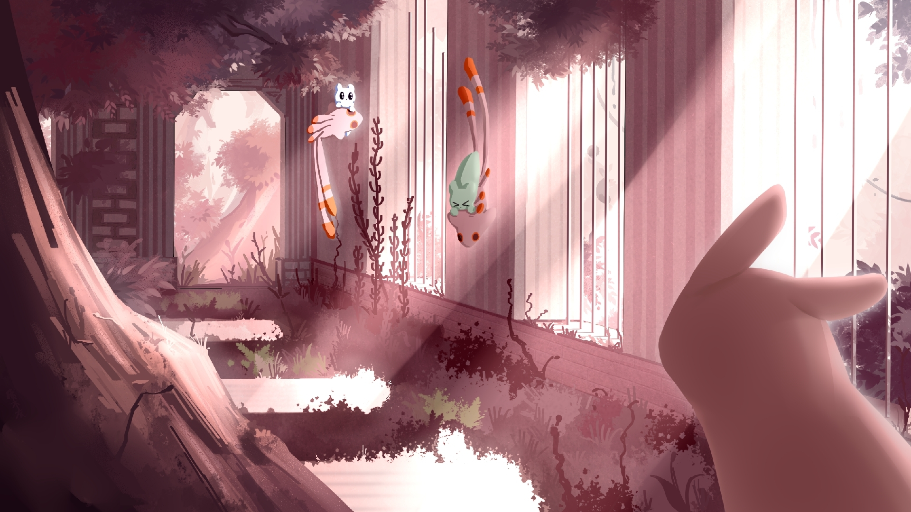
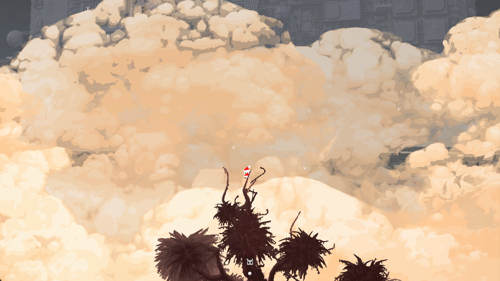
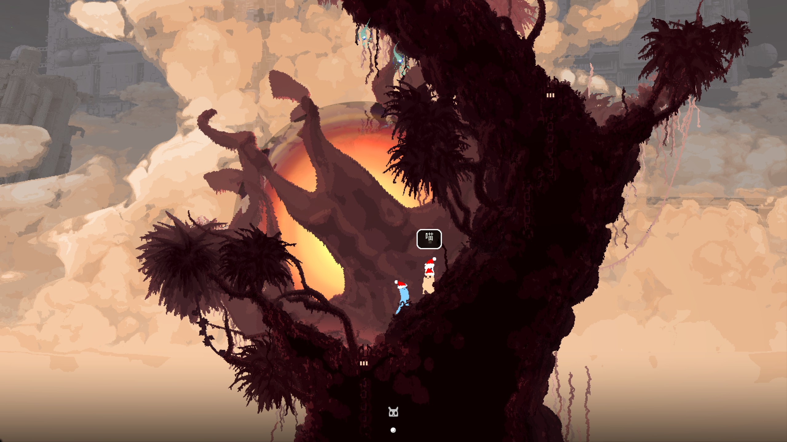
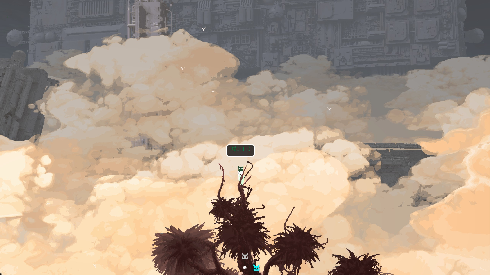

平凡之路
也是通关了雨世界的矛大师，带着一个胆小的猫崽一路摸爬滚打急头白脸爬上各种支架然后奇特地去世。

虽然游戏难度很大（新手引导很差），但是雨世界的剧情和美术有着实实在在的功底（尤其是美术，感觉也确实难以找到第二个有着这样美术的游戏了），游戏中很多自己的实机画面就能当壁纸用，而且画风也很戳我。
不过我其实对飞升结局感到有些遗憾。尽管从接近神的角度来看，飞升是那么的永恒与高尚，可是从一只小小的蛞蝓猫来看，它们又哪懂无尽循环与轮回的痛苦，黄猫为了白猫而跳下去的那一刻也许就注定了它们心中最终的归宿永远是和自己家人幸福的生活，何必抛弃彼此去追求传说中脱离尘世的飞升。这也是我看到黄白猫飞升CG时竟然会感到难过的原因吧。
但是猫和蜥蜴都很可爱:D

2026-8-20 补：
打完了饕餮的剧情，饕餮的旅途与结局应该是整个游戏里面所有蛞蝓猫之间最美好也最令人高兴的了。抛却了迭代器的宏大背景叙事，这位胖胖的“族长”一路以来只有收集美食食谱这一件令它如此专注的事。从雨世界的叙事基调来看，相比于从一开始就要为迭代器肩负沉重使命或是因为失去至亲花费一生踏上复仇之路的故事，这样的“大胃袋”大冒险确实让人感到难得更加惬意一点。


我踏上遥远的旅途奔赴四方，我心归宿却永远是我温暖的故乡。
2026-9-1 补：
白猫归乡，最喜欢也是最意难平的结局。

昔人已乘黄鹤去，此地空余黄鹤楼。